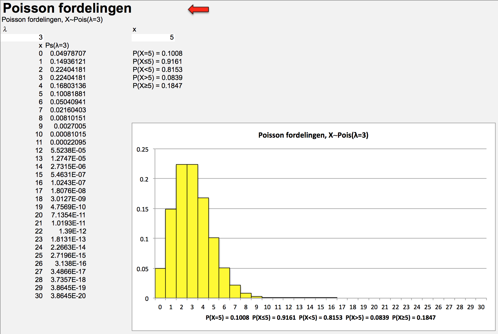
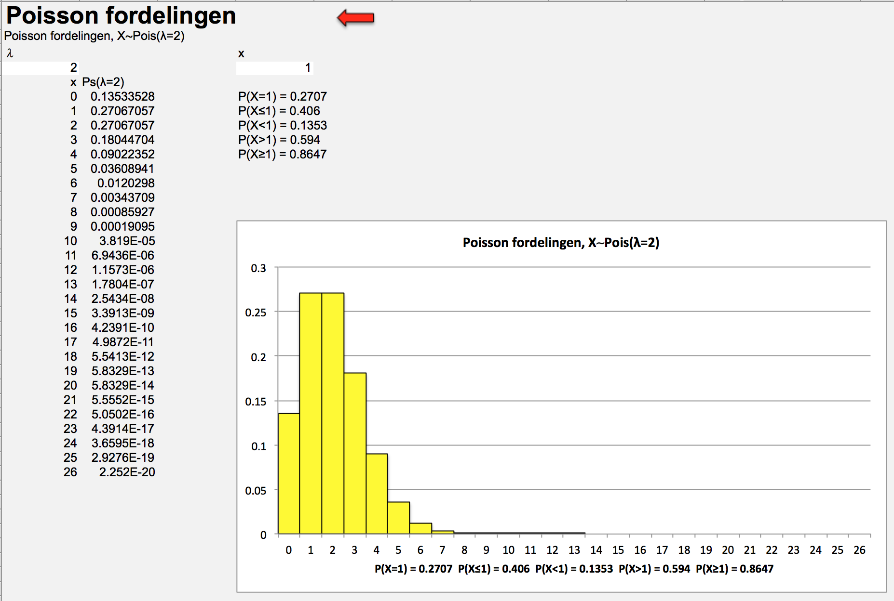

Kapitel 6 Poisson fordelingen
Poisson fordelingen er en diskret sandsynlighedsfordeling der angiver sandsynligheden for at et antal begivenheder, indtræffer indenfor i tid eller rum. Fx.
 1. Antal cykelpunkteringer indenfor 1000 km.
2. Antal mål i EM-finalen.
3. Antal dødsfald i trafikken på et år.
4. Antal kunder i en bankfilial i timen.
5. Antal skadesanmeldelser i løbet af ugen.
1. Antal cykelpunkteringer indenfor 1000 km.
2. Antal mål i EM-finalen.
3. Antal dødsfald i trafikken på et år.
4. Antal kunder i en bankfilial i timen.
5. Antal skadesanmeldelser i løbet af ugen.
Poisson fordelingen har kun en parameter middelværdien \(\lambda\) (det græske bogstav lambda), det forventede antal hændelser pr. enhed. Notationen for en stokastisk variabel der er poissonfordelt er:
\[X\sim Pois(\lambda)\]
Når vi kender \(\lambda\) kan vi beregne punktsandsynligheden for at den stokastiske variabel X er netop x som:
\[P(X=x)=\frac{e^{-\lambda}\cdot \lambda^x}{x!}\]
Uafhængighed mellem antal hændelser der intræffer i 2 på hinanden følgende intervaller er en forudsætning. Har der fx. være 1 punktering på de første 1000 km. påvirker dette ikke det forventede antal punkteringer på de næste 1000 km. Vi kalder også \(\lambda\) for intensiteten, intensiteten er konstant for intervaller af samme længde og proportional. Er \(\lambda\)=3 for hver 1000 kilometer, bliver \(\lambda\)=6 for 2000 kilometer.
Hvis det forventede antal punkteringer \(\lambda=3\), kan vi beregne sandsynligheden for fx. 4 punkteringer som:
\[P(X=4)=\frac{e^{-\lambda}\cdot \lambda^x}{x!}=\frac{e^{-3}\cdot 3^4}{4!}=\frac{4.032753}{4\cdot 3\cdot 2\cdot 1}=0.1680\]
Sandsynligheden for netop 4 punkteringer er derfor 17%. Ønsker vi at bestemme sandsynligheden for højst 4 punkteringer dvs. \(P(X\leq 4)\). \[P(X\leq 4)=P(X=0)+P(X=1)+P(X=2)+P(X=3)+P(X=4)=\]\[0.0498+0.1494+0.2240+0.2240+0.1680=0.8152\]
Sandsynligheden for flere end 4 punkteringer dvs. \(P(X>4)\) kan udregnes som:
\[P(X>4)=1-P(X\leq 4)=1-0.8152=0.1848\]
Variansen for poissonfordelingen er \(\lambda\), heraf følger at standardafvigelsen som kvadratroden af \(\lambda\) dvs. \(\lambda^{0.5}\)
Vi får følgende sandsynlighedfordeling.
Nedenfor ses output fra Freestat: 
Spørgsmål bankkunder
Antag at antal kunder der ankommer i en bank i minuttet er poissonfordelt med intensitet 2. 1. Hvad er sandsynligheden for der netop ankommer 1 kunde i minuttet? 2. Hvad er sandsynligheden for der netop ankommer 10 kunder på 10 minutter? 3. Hvad er sandsynligheden for der mindst ankommer 1 kunde i minuttet?
Svar bankkunder
Vi skal finde sandsynligheden for der netop ankommer 1 kunde i minuttet. Her er tale om en poisson fordeling med parameter \(\lambda\)=2, vi ønsker at bestemme sandsynligheden for at x=1. \[P(X=1)=\frac{e^{-\lambda}\cdot \lambda^x}{x!}=\frac{e^{-2}\cdot 2^1}{1!}=0.2707\] 
Vi skal finde sandsynligheden for der netop ankommer 10 kunder på 10 minutter. Her er tale om en poisson fordeling med parameter \(\lambda\)=20. Vi skal jo betragte 10 minutters intervallet, derfor ganger vi intensiteten for 1 minut \(\lambda\)=2 med 10. Vi ønsker at bestemme sandsynligheden for at x=10. \[P(X=10)=\frac{e^{-\lambda}\cdot \lambda^x}{x!}=\frac{e^{-20}\cdot 20^{10}}{10!}=0.0058\]

Vi kan bestemme sandsynligheden for der mindst ankommer 1 kunde i minuttet ved: \[P(X\geq 1)=1-P(X=0)=1-0.1353=0.8647\]